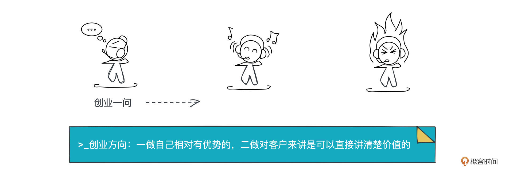
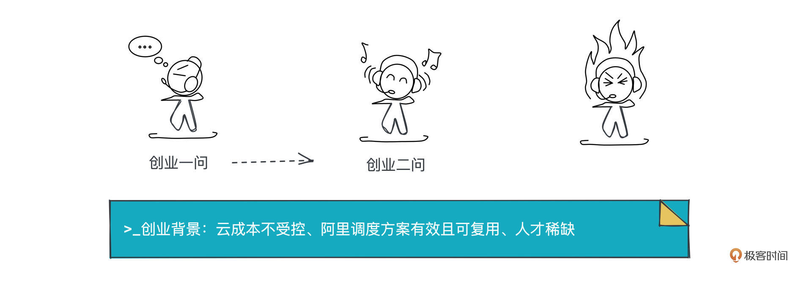
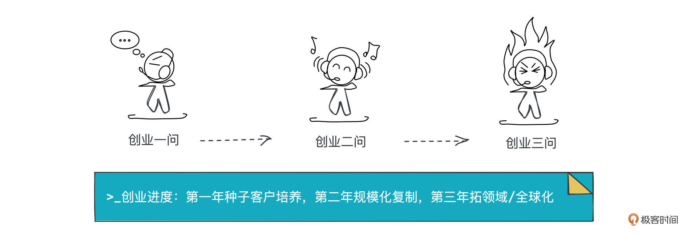

- 01 小厂项目：做程序员不难，难的是做职业程序员.md.html
- 02 小厂创业：做出一个产品，卖给所有人.md.html
- 03 淘宝HSF：能让淘宝出重大故障的就那批人.md.html
- 04 淘宝消防队：真正最优秀的程序员不应该是英雄.md.html
- 05 HBase_T4：Leader最重要的，说白了是要赌未来.md.html
- 06 异地多活：技术圈子的人，见过猪跑很重要.md.html
- 07 运维团队：我能干，只是我不想干而已.md.html
- 08 基础团队：研发效能部门，解决不了研发效能问题.md.html
- 09 统一调度：只是问题非常多而已，摔出来就行了.md.html
- 10 出走大厂：离职？还是不离职？这是一个问题.md.html
- 11 CEO心得：大厂出来创业，最大问题是对钱没概念.md.html
- 团队：在人身上，你到底愿意花多大精力？.md.html
- 开篇词 这一次，我们来采访毕玄.md.html
- 成事：技术人最大的问题就是情怀化.md.html
- 文化：你所在的团队，有多少人敢讲真话？.md.html
- 方向：技术演进，到底该怎么思考未来？.md.html
- 架构：架构师只是个角色，不是个岗位.md.html
- 番外：一位险些没上得了大学的青年，如何开启计算机征程.md.html
- 捐赠
11 CEO心得：大厂出来创业，最大问题是对钱没概念
你好，我是叶芊。- - 在一段波折的离职过程后，毕玄从阿里出来了，决定创业，但他却完全没想好自己要做什么。- - 回顾他的职业生涯，异地多活、代码工具、统一调度都挺有市场的，他也提到自己差点就去做代码了，投资都快谈完了，最后想了想还是悬崖勒马改做现在的调度。今天我们就接着创业继续聊，看看他是怎么选择创业方向的。- - 你可能暂时对创业不太感兴趣，没关系，听一听这位技术大牛对市场以及个人优劣势的分析，相信对你之后的职业发展也会有帮助。
- 极客时间：之前聊到创业方向的选择，第一点是选一个自己相对有优势的领域，然后呢？
毕玄：第二点我们特别关注的，从商业模式上来讲具不具备盈利的可能性。盈利，最重要的是你对客户的价值是什么？如果有价值，客户是肯定愿意付费的，所以关键是价值。
我们第一想法是代码相关，这对开发者影响是最大的，所有的人都会用。所以代码智能化其实是我们考虑的第一方向，几乎都谈完了。但最后我觉得，最大的问题是我们团队没有优势，之前有希望做成是因为阿里的环境，但离开了，就要跟GitHub对着做，但是跟他们比，我们一点优势都没有，这玩意儿咋成功？
另外商业周期非常长，GitHub已经算很快了，但它做了两三年，现在也只是推进到了一定阶段。但在中国，你从开始到商业化可能要5年以上，那就要考虑一下5年你的公司持续没有收入，生存就得靠不断地融资，这难度太大了。
极客时间：而且就像你说的，技术的人，持续找钱的能力相对没那么强？
毕玄：对。而且大公司的人最大的问题是做所有事情没有成本概念，这才是悲剧。
比如说我，以前就算财务给我一个数，一年亏了多少亿，我也没有任何感觉，反正不是我出钱，有人出，而且还会觉得亏了这么多亿又怎么样？我还得加人。你就会把这个故事讲下去，一点都不在乎，因为你亏损了不用自己去融。
大家对钱没有概念，很多大厂出来创业的人，钱都不知道花哪去了，稀里哗啦就没了，心里觉得相比以前，现在才这点钱，随便花，然后就没有钱了。
在阿里，你说服了上面给你投资源做一件事情，失败了最多也就是年底绩效差一点，奖金少一点，没有别的了，不会失业也不会倒闭。但出来了这都是事实，你没有钱，公司就倒闭了，员工是很难跟你讲梦想的，先必须有合理的报酬，梦想只是个加分项而已。
极客时间：所以代码方向还是大厂有优势，你当时还想过什么方向吗？
毕玄：另一个就是中国现在特别火的开源，人简直太多了，做大数据的、做数据库的，不知道有多少家，一面墙都不一定能写完（笑），已经卷成比花卷还卷了。
对技术创业来讲，选这条路，你前几年还是挺爽的，因为你要考虑的是用户不是客户，用户都是免费的，免费好谈，你可以刷脸，别人用着合适还可以帮你推广站台，都没问题，如果前几年你还能融到资，生活简直不要太爽，就乌托邦。
但是我觉得，到了某一年，你需要尝试商业化的时候可能会面临非常巨大的挑战，尤其在中国。你看，有哪家公司通过开源积累了大量开发者，最后通过漏斗效应商业化成功的？就现在看，我觉得八成是不大可能。
极客时间：为什么国内商业化成功不大可能？大家对付费的观点不同？
毕玄：你想中国市场购买技术软件的是什么行业？多数是金融，但金融又不会单为一个技术软件付钱，它是大项目招标，里面包含技术软件。除非你有能力直接去投标，不然就得在上面做一些应用软件。这种阿里云可以，因为阿里云有品牌，他其实也不是自己干，他也只卖下面基础设施，上面可以找合作伙伴，但你很难，你一家创业公司凭什么？
而且大家去见客户，免费的情况下也是什么都好谈，随便谈，但只要说到要收一块钱就是另外一回事，这就变成了公司行为，不是个人的，公司对公司是一个非常正规的行为，因为决策不一定是他能做的，而且金额越大，决策链条一定会越长，不管什么公司。
极客时间：但是国外有很多开源到商业化的成功案例，如果参考国外经验呢，中国公司从开源到商业化的路？
毕玄：海外没有问题，像Confluent、Elastic、Mongo等等，都成功走完从开源到商业化的过程，每个季度的营收都在几个亿美金，增速非常快，虽然还是亏损的，但你至少能看到希望。
但现在缺的是人才，到底去哪找一些人，把开源产品在欧美完成商业化。如果有谁能走通这条路，对中国的软件产业会是巨大贡献，只要有一家走通，关键人才就有了，以中国的复制能力，一家公司有了，中国就全有了，这不是问题，现在主要是没有人。
极客时间：对做开源的公司来说，以前大家会讲亚马逊的故事，人家强势，我就是不盈利。不能这样吗？
毕玄：但你看他最终还是盈利了，而且一把就赚回来了。大家愿意投你钱，是因为他相信你一把可以赚回我以前投给你的所有的钱。
而且ToC是有可能一把赚回的，但ToB不可能，这个逻辑根本就不成立。所以这些开源商业化的公司还真是要看一下，因为美国这几家已经很成功了，一年营收接近10亿美金，增速70-80%，但仍然亏损，这太恐怖了，这样下去你到底能不能盈利？如果不能盈利，这其实是个泡沫，对商业公司来讲什么叫泡沫？就是这个，能盈利你就不是泡沫，不能光讲梦想。
如果可能性是存在的就可以了，就有信心，对一家公司来讲说实话这就是最重要的，尤其对创始人团队，这伙人是很苦逼的，因为就是熬，你得熬很多年，不到盈亏平衡的那一天，其实都不算熬出头。但到那一天情况会好非常多，很多都变了。
极客时间：所以现状是没一个跑通，又不能靠画饼，那中国的企业从开源到商业化，你觉得有希望吗？
毕玄：我觉得肯定会有，无非是几年的问题，以及是谁的问题。这条路也确实是技术人员创业最好的选择，阿里出来了这么多人创业，多数选择的也都是这条路。
因为中国已经进步了一点。以前开源，很少有中国人做的东西是主导，或者中国人做出来影响了全世界，但现在有了。现在除了最底层的核心技术，中国在应用层的技术能力是可以跟国外抗衡的，没有太大差距，中国的场景又更丰富，能诞生出很好的开源产品，然后影响全世界。这个套路已经成熟了。
有些投资人赌也是对的，他们为什么很愿意投这些。我之前很震惊的，因为商业上很难讲通，但他们说其实很简单，他们相信中国一定会有一家走通的，是谁倒不重要，他只要押大赛道就可以了，只要有一家成功就没有问题，但小赛道还是不要押，成功了回报也很低。
极客时间：看我们讲到的几个领域，代码智能化、开源数据库等，这些方向都挺好，但是你认真想过还是决定算了。
毕玄：都挺好，我也挺想做，但以我们创始团队的背景，如果创办一家公司我觉得最好不要做这种。
创办一家公司，一做自己相对有优势的，二做对客户来讲是可以直接讲清楚价值的，因为这样商业模式和收费才能闭环，如果能完成这两步，我觉得未来这家公司是有可能走向盈利的。
如果你想做对社会有更大影响的大赛道，或者就纯粹想Buying一个梦想，最好你先创办一家成功的公司，做成具备盈利能力并且能持续盈利的，那个时候再投一点钱去梦想，或者再做对社会影响力大的陌生领域就可以了。有了很好很健康的现金流，你随意好了，想做什么领域都可以，像阿里，阿里云能做为什么？就是有淘宝，能持续产生健康的现金流。

极客时间：你最后选择了做调度，你怎么看这个方向的，可以多讲下吗？
毕玄：看我们在阿里的经历，有什么事情是相对外面有优势的，也要相对可能被产品化和规模化的，另外对客户有价值的，我们觉得只有调度有可能，其它都很难。
异地多活具备领先性，但它不具备通用性，所以如果做这个方向，会做成一家咨询公司，但咨询是我们退休的目标，不是现在，而且咨询不可能做大，虽然比较赚钱。因为我们现在发现，总体顺势而为还是很重要的。
像国外，FinOps（云成本优化）要开始起来了，算是个新词，一个方向火没火最容易判断的就是，看有没有越来越多的创业公司，并且拿到了不错的融资，过去一年，国外做FinOps拿几千万美金融资的公司已经出现了。
但中国FinOps还是一个概念，还没有能说出一家公司确实做出名堂的，当然这对我们来讲就是一个非常好的现象。
极客时间：如果FinOps还在概念阶段，那客户容易理解你的产品价值吗？
毕玄：FinOps对客户的价值现在是被认可的。因为很多公司上云之后，发现成本完全不受控，原因是云太好用了。
以前不在云上的时候，机器的采购内部要过很多流程，还要真实地去买，物流都需要时间，但在云上可不是这样，你点一下就买来一台，而且钱还不是现在付，是一个月后付，所以就失控了。连我们这样的创业公司都出现了，到了月底，一看帐单，怎么花了这么多钱？所以我们相信这个问题确实存在。
另外是服务器成本控制，我们觉得阿里应该是做得非常好的一家，方法是有效果的，也是可以通用的，这对客户来讲是有价值的，尤其大环境都在喊降本增效。
为什么FinOps刚好在现在这个时间点火了？一是云的便利性带来了成本失控，二是以前大家都不Care成本而已，现在这个方法可能会被大家认可，所以我们觉得这个帽子对大家来讲不是那么虚幻的话题。
极客时间：有一点好奇，在服务器成本控制这个方面，除了你们在做的这种方案，有其他的方法吗？
毕玄：我们觉得没有。
全球很多公司探索这个方向，但目前来看只有Google、阿里和百度在非常成功地往前推进，而且结果也证明是有效果的，其他公司都很难，所以现在中国头部公司做的方案都很类似。
而且做这件事涉及的专业领域很多，像我们为什么要这么多人？因为需要大数据团队、调度团队、操作系统内核团队，我们总共有5个合伙人，全是技术出身，覆盖了几乎各个技术领域。但对中型很多公司来讲，要组建三个这样的专业技术团队其实很难。
这意味着可能要投入比如四五十个人纯做技术，但一家中型公司的研发人员就那么多，很难投到这个数量，就算能投，但中国做过这件事情的人特别少，反正就这几家，就这伙人。如果他们不出来，其实基本也都不出来，你没有经验自己做，阿里都花了三年，我们觉得你不会比阿里快。
所以我们给公司的定位是，不是说你不能做，是我们可以加速你的整个进程，先让你快速拿到一定成果，对中型公司来讲这很重要，他们要的就是尽快拿结果，而不是在这里浪费太多时间。等他拿到结果，你要继续往下发展的，是没有问题。

极客时间：你现在做的调度产品是什么样的模式？
毕玄：它比较像PaaS，至少目前阶段的产品形态，你可以认为就是一个PaaS软件，可以部署在各种环境下，私有云、公共云等等，部署完客户做对接，基本就可以了。
贝联珠贯，打造全球顶尖的资源调度产品，将全球企业的资源利用率提升到20%以上，从而显著降低各企业每年投入的机器总预算，节能减排促进碳中和。技术栈基于K8S/Yarn构建，对K8S/Yarn的关键部分做深度开发和定制，提升其规模能力、稳定性，以及多云/混合云管理，包括离在线等不同计算形态的混合部署。
极客时间：这和你之前在阿里做的统一调度？
毕玄：区别就是更加产品化，就这一点。
阿里或者说任何公司，内部做的东西都只是贴合那一家公司做的一个特殊的解决方案，阿里以前都叫一个能力。但出来你要把这个能力变成一个产品，能面对各种各样的场景，这是很不一样的。
因为能力，不需要考虑很多运行环境，环境就是设定好的，我只是解决这个环境下的问题，但现在你不知道客户是什么情况，能不能有个产品通用，说白了，比如A客户是这样的，我投了10个人做，在做B客户的时候不用投10个人，那就是产品。
所以你想，一家公司最后能盈利是因为产品的边际效应产生了，比如我总共50个人研发，第一个客户10个人做，第二个6个人，第三个可能只投了2个人，这就有了。如果不能就完蛋了，做一个10人，二个10，第三个客户还是10，这样研发是做不下去的，没有边际效应。SaaS为什么大家都觉得很好？是因为边际效应太强了，你投了一把，后面就躺着数钱。
极客时间：那对调度来说，你觉得有办法实现边际效应吗？因为每个公司的技术基础肯定不一样。
毕玄：对，会不一样，但我们希望能产生边际效应。交付成本肯定都是需要的，无非是成本我怎么收敛。
第一个项目一定投入非常大，搞不好是整个公司，但第二个客户我必须把这个成本压下去，压到一个数的时候最后我算嘛，总体投入是多少，我从每个客户身上能获得多少利润，然后算边际效应是多少，这里我就有一个很好的定价了，但前面的定价肯定是不那么合理的。
所以定价这个事，在大公司是不可能感受出来的，以这个产品的定价，要做到多少客户才盈利，很多人搞不好算一下发现自己永远都不可能，那就成做慈善了。当然大公司有很多补充，我这里可能是亏的，但带来了其它的，所以总体是盈利的。
但你小的创业公司就一个东西，所以别想太多，如果不赚钱，你就是不赚钱，而且会永远不赚钱，关键是你不赚钱公司迟早会倒闭，因为我不相信有人融资能力是无限的，公司一直亏损，还一直有人给钱，哇塞这也是见鬼了。
极客时间：现在像定价、财务这块，自己是在补课吗？
毕玄：那必须补，还有行政，经营公司的各种乱七八糟的事情。
CEO不就是这样，很多技术人出来创业肯定想做很多技术什么的，别扯了，你出来以后就会发现，CEO就是一个打杂的，公司什么事没人干就是CEO干，如果有人干，你最好就不要干了，你就别管了，那个人如果你很信任的话就是这样。
以前在大公司你完全不用经历，都有人在背后帮你全搞定，但你出来以后不可能，除非你有这样的合伙人，但多数技术又没有，所以你全部得自己学。像财务，你得始终知道自己哪天会倒闭，哪天手上的钱就会没有了，这太重要了。
我们现在非常羡慕出来创业后能打平甚至盈利的，这才是公司。
极客时间：为什么？如果打平了，就验证了公司的业务方向是可行的？
毕玄：打平了节奏就都在你手上（笑），而且你的心态会很安稳，否则你永远都活在会不会哪天就没有钱的噩梦里，想下个月怎么发工资，这个时候不管你有什么梦想，其实都没有意义，有啥意义？你首先得有钱。
我们一帮出来创业的CEO们，现在聊天已经没有人聊这些很虚幻的梦想了，都只谈大家手上的钱还够不够，够多久。
极客时间：不谈梦想，大家现实地互相勉励。比较理想的情况要屯几个月的钱？
毕玄：现在的融资环境，至少要一年半以上，我们都是按照18个月准备的，就是未来18个月里没有一分钱的收入，这家公司也能活下去，如果不能的话，风险会比较大。
极客时间：你现在做的调度领域，有没有期待什么时候自己可以打平？
毕玄：那早了去了。ToB太难了，一开始赚不了钱，后面你也很难讲能赚回来，千万别讲ToC的故事，我前面几年亏了多少钱，后面会一年把钱全部赚回来。
极客时间：你觉得ToB想打平要积累多久？或者说公司一般发展的节奏是什么样的？
毕玄：至少3年以上。你看ToB做一个新东西，第一年说实话就是种子客户培养，如果种子客户做得很好，到第二年，你基于种子客户的赛道可以做规模化复制，就是复制多少个的问题，第三年看你能不能扩到一个更大的领域，不限赛道通用的，或者如果能在全球化上有所展现，这样的公司未来就很有可能发展得非常好。这是最理想的节奏。
极客时间：第三年你提到“全球化”，这个之前还挺少提的。
毕玄：全球化是个很有意思的技术新命题，因为在中国，技术人以前没有见过全球化，有什么新问题很难说，但我觉得我们这种人是做不了的。
极客时间：创始人的文化背景不一样？
毕玄：差太远了，中国做全球化成功的几个业务，创始人基本都在海外生活了很多年，非常知道海外跟中国的异同是什么。
你看马云那一代创始人，跟移动互联网这一代差别很大，你可以认为他们确实偏草根，其实也没有那么草根，只是看起来偏草根，但到了移动互联网这一代全是精英，基本全是名校的，也都有海外背景，像张一鸣、王兴这些人天然对多元化文化有更深的理解，注定他们这一代有可能成为更好的企业家。
我觉得这是创始人基因决定的，没法弥补，即使老一代创始人你招了一个也没法弥补，因为过往太成功了，他肯定觉得我更懂，你们懂个啥。但新一代不一样了。
极客时间：新一代的创始人，面对的是新一代的问题？
毕玄：对，他们就会去解决。美国为什么能做好全球化，他们小孩一出生面对的就是各个国家的人，他觉得这不很正常吗？但中国根本没这环境。
极客时间：你现在是在创业的第一年，感受怎么样？
毕玄：第一年你还在相对乌托邦阶段，还在蒙头做一个自己觉得对这个世界很有价值的产品，是最爽的，拿了融资尤其，一你不缺钱，二业务增长也不是你这个阶段最重要的目标，诉求还不会很强烈，没有到比如要追求盈亏平衡，自己能做一两家，就已经觉得我这产品太成功了。
但等见到真正的客户让他付钱的时候，你可能就发现原来根本不是这样，就吐血了，而且后面业务压力会很明显，第二年可能就会期待你做复制的速度，第三年可能要求高增长，甚至开始要求你打平。大家觉得创业第一步就很痛苦，但后来你会越来越痛苦（笑）。
我们节奏不算太慢，去年11月成立的，到今年6月左右就开始接触外部客户，我就跟团队说美好的时代要结束了。
你会看到客户跟你想的肯定有一个GAP，还可能很大，这很正常，当然就看你怎么看待，像我们就觉得挺好，至少说明客户对我们还是有点兴趣的，虽然有GAP，但客户对我们有兴趣，只要弥补这个GAP，我们还是有点机会的嘛。
当然你也会有另外的打击，比如说拜访很多家客户可能最后感兴趣的就是几家，这就看你怎么接受了，因为这就是失去品牌后最大的问题，所以创业公司确实比较难。

极客时间：在产品的运作节奏上，有做市场、品牌这些事吗？
毕玄：我自己的看法，这取决于你公司定位的客户类型。比如说如果你做开源，那不用说了，肯定是要重点做品牌，做社区的运营，重兵配备。
但做ToB很多是商业的，像我们，每一个客户都是商业的，不存在免费用户，而且我们做的是中大型，他们其实不大会受Marketing和品牌的影响，因为中大客户没有多少是我网上看篇文章、听到哪家公司，来找你问一下能不能提供个什么卖给我，这不大会发生。
另外销售来了其实也没有用，之前我们见了很多客户，可能有20多家，很多对我们有兴趣，但我们后来都很害怕。
极客时间：啊见了这么多客户，也都有兴趣，为什么会很害怕？
毕玄：说实话我们的成功率还是不错的，客户觉得挺有意思，就会说要不你们来测试一下。但最大问题是我们自己并没有准备得那么好。
极客时间：没准备好，是因为你们初版产品还在做？
毕玄：比如说有四五家，让我们同时去试一下，但我们没有这个人力。所以后来我们7月份叫停了所有的客户拜访，都不去见了，我们觉得目前已经有明确可以共建的客户了，就先做好这些，其它的不用纠结，我们相信只要做好了，至少在中国目前的情况下，那几家应该还是我们的。
极客时间：所以你们去找这些客户的策略是什么？
毕玄：逻辑很简单。首先我们认为中大公司一定有自己的客户群体，剩下就是一家一家拜访，当然你肯定先选赛道里最头部、最有影响力的，所以这种情况下反而越低调越好。
因为你现在没有客户，太高调在中国真不是好事，卷得非常厉害的，抄袭也非常严重，你最好能非常低调地出现在各中大客户的名单里，毕竟市场可能就这些客户，谁先做掉这里面的大部分，谁就赢了。
等需要做品牌的时候，其实我已经占领了不少客户了，需要更规模化的。但前期我们觉得那些一点用都没有。
极客时间：前期的客户触达具体是怎么做的？
毕玄：刷脸。因为你创业不可能什么资源都没有，肯定或多或少有点，然后就要去拜访这些人。
但比较难的是因为我们每一个客户都是要付费的，加上单价又比较高，不是大家随便帮你刷个脸就可以的。付费到一定金额就非常复杂，决策链长决策成本高，创业公司又没有品牌，我为什么要选择你？光这个问题在内部都能被挑战到死，你跟那个人关系是很好，但你为什么要定向采购这一家？会不会涉及利益？为什么不引入更多家供应商比价？
种子客户是纯属刷脸和信任，根本没什么别的，否则别人只要问你有客户Case吗？没有，你就已经出局了。但是创业公司第一步如果刷不到种子客户，基本就没有什么希望了。
水友讨论区
今天的对谈到这里就暂时结束了，重点聊的是毕玄对创业的思考和认知，毕竟做复杂的业务，认知决定了产品成熟度。
这是他的第一次创业，在选择方向时，逻辑主要有三点：自己相对有优势具备领先性、相对能产品化和规模化、商业模式具备盈利性。
代码智能化方向他认为不满足第1点，异地多活不具备第2点，现在大火的开源方向在他看来暂时还不太满足第3点，所以为了成立一家真正的公司，他选择做调度，成为了一名在创业公司“打杂”的CEO。你在选择自己之后的从业方向和公司时，3点判断标准其实也可以借鉴。
不知道你对今天对谈的哪个部分印象比较深刻，欢迎留言讨论。
到这里，毕玄个人的20年程序人生我们就聊完了。后面我还更新了一讲番外，聊一聊一切的开始——毕玄的大学经历，希望了解毕玄接触计算机的初心，把他的早期想法展现出来，与他后期观点形成对比，看看我们是否能找到他在面临无数人生选择时的底层逻辑。
拓展阅读
作为一个喜欢写文章的人，自己的人生翻开了新的一页也少不了会手痒想写上一篇，之前毕玄就创业写了这篇：凡是过往，皆为序章，凡是未来，皆有可期
© 2019 - 2023 Liangliang Lee. Powered by gin and hexo-theme-book.